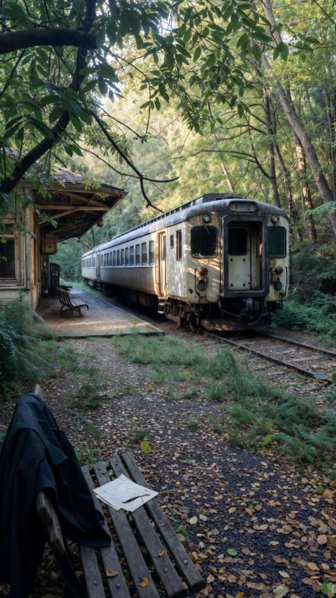
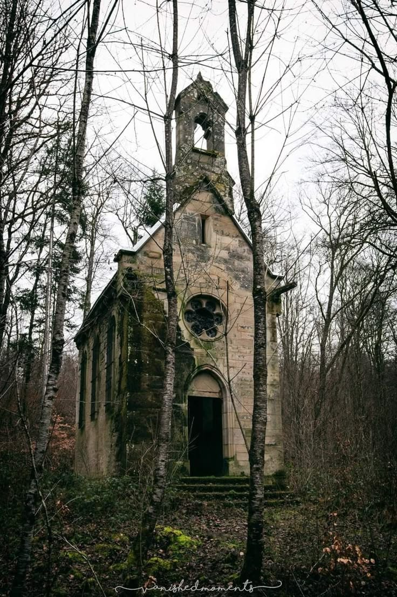
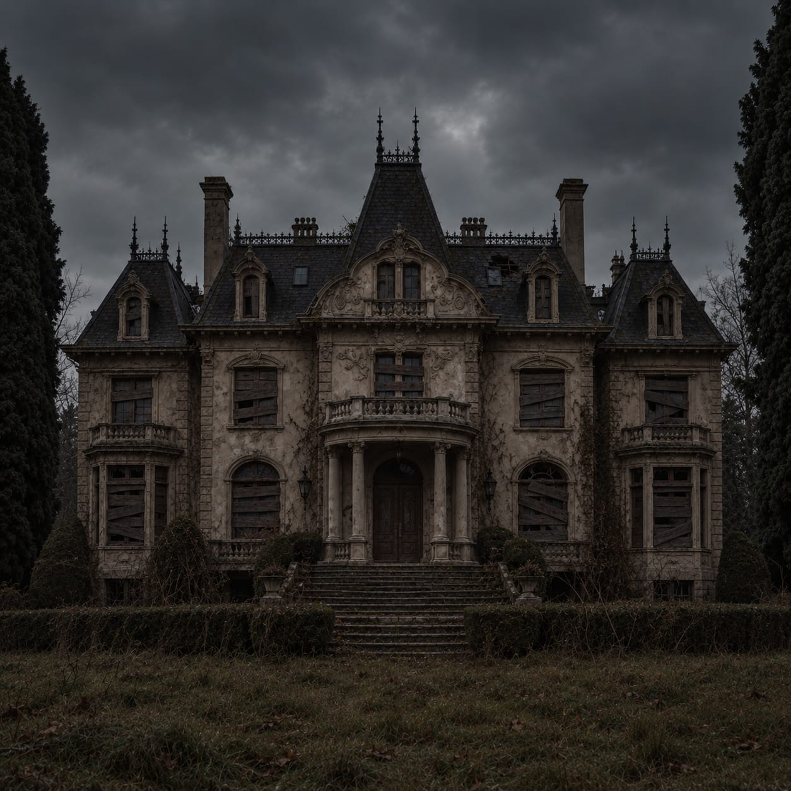

Olá, estranho.
Você encontrou meu pequeno arquivo pessoal sobre minhas explorações e histórias que quase ninguém conhece.
Eu costumo visitar lugares que aparecem nos mapas, mas parecem ter sido apagados da memória.
Aqui registro fotografias, anotações e acontecimentos encontrados durante essas explorações.
⚠ Algumas páginas deste diário podem conter informações incompletas, veja por sua conta e risco.
A mansão da rua solitária.
Nunca tive curiosidade de entrar naquela mansão, e nem era a minha rota passar por ela.
Ela fica numa rua solitária, tendo apenas ela naquela rua rodeada por uma mata fechada.
O mais estranho, é que não havia moradores a anos, muito antes de eu nascer, mas sempre que passo ela sempre esteve trancada por correntes e cadeados.
Só que dessa vez, o cadeado estava no chão e a porta lá no fundo batia sem parar, talvez por causa da chuva que aconteceu..
t̴̗̥̖̙͋̐̓͂̏͐͐͌̄͗͐͆́̌͂̇̃̾̒ ̵̨̧̗̹͓̳͖̫͚̖͔͇͇̣̼̐̽͂̈́̈́́̽̋̍͐̅̈́͆͊͐͒̃͋̊̈́͘̚͝3̴̢̦̗̺̰͓͔̼̦̳̱͓̆̒̅́͠m̷̨̧̛͓̩̗͔̂̒̇̄̾͐̓͒͋̃̿͐̔̂̊̈̀̈́̐͒̾̚͝ ̸̢̨̣͕̪͍̻͚̲̘͎̝͖͚̱̯̟͖̺̟̘̮̹͍̞̎̀̾̈́̌̏̒̓͛̅͛͑̀͋͝͠ͅȁ̶̧̙̠̱̻͇̱͕̣͈̻͍͖̱̩̼͚͙͔́̽̀͜͝l̸̨͔̤͂̈́̊̍͝͝g̷̗̦̭̞͖͚̠̲͈̼̪̹͇̣͔̝̬̘̤̈́͑͒̓̈́̿̓̾͂̿͜͝͝͝͝ͅ ̸̬̓̅͆̇͘͝ ̸͔̺̭̳̯̀̀̀̿̓͌͐̀̏̏̋̂́̎̏̆͊̽̚͝͝ ̵̨͇̳͓̳̦̱̥͔̳̺͉͚̻̼̦̅͜ͅ ̷̢̨̡̘̲̟̳̞̭͇̺̰͚̻̳̬̅͗̀́́͂͜ͅͅ ̵̡̟͓̪̣̣͓̳̜͎̦̲̮̾̾̇͆̌͆̈́͑̑̋͌͝0̷̜͓͕̫͍̣̩̜̪̜̟͕̮͎̩̩̳̦̯̇̽ ̶̛̯̣̝̗̫͍͍̺̟̮̙͕̼̤̖͚̩̼͍̖͚́̅̏̉̈̃̒͗̓̆͒́̀̚͘͜͠͝e̷̡̛̖͚͉̙̙̎͆̆̀̒͆̿͘͜͜͠s̷̡̡̧̨̨͖̠̳͈͍͖̞̣̲̼̬̘̯̙̩̬͖͉͈̈́̂̔̍̀̊̔̿̉͑͆͆̽͜t̸̨̡̧̼̖̩̝̘̺̻̗̺͖̪͓̰̱̠̞̫͓͛͑̏͌̎̽̎͆̉̈̈́͆͐͒̓͑̈́̃̕͘͜͝͝r̴̢̨̡̛̻̗͔͇̘̠̻̭̥̰̞̹̗̾̄̂̔̐̀̎̓̂͗̆́̑̉̑͒̍͠4̴̯̯̲̥̼̰̹̫̍̀́̇̏͠n̶̛̫̙̙̮̘̱͚͚̤̗̘͍̗̻͕͚̬̤̎͂̒̇͑͒̏̕͜͜͠ͅ ̷̧̡͙̜̻̙̥͖͎͎͍̹̼͍͔͙̮͓̬̬͑̈́̆͐̊̀́͌͑̆̓̍͗̑͋̈́͒͆̐͗̄̈́͘̕͘̚͜ͅ ̶̡̼̦̥̤̝͖̥̰͍͓̩͓̺̉̿͜ ̵̡̢̡̧̨̱͉̭̥̰̰̝̹̦̠̖̻̮̺̭͔̞̊̎͐̂̾̂͗̃͛̈́̔̂̄̃̇͐̓̃̂͑̚̚ ̸̢̡̨̹͓̯͚͇̳̙͚̱̫͔̜̙̗̱͎̙̗̎͌ḧ̷̛̞̮͉́̄̄̑̅̇̽̈́̄̌̓̑̏̇̉̕̕0̵̮̲̖̝̖͚͆̍̔͑͗̍̑ ̸̝̳̜̜̊͋̉̐̐n̸̢̢̖̪̲̤̺̜̭̣͔̗͙͕̗̟͈̞̗̐͂̈́̄̓̾́͋̌́̐̈́͋͌̓͗͆̂͒̚͘͝͠ë̷̝̤͇̻̺̻̹͉̠̫́̒̄̍̄̈̆̾̀̋́̋̔̀͠s̵̲̐̀̈́́͗̑̉̊̚ś̴̡̛̞̞̗̩̹̣̺̤͎̘̺̜̣͍̭͈̥̺̰̀͆͊̂̃́͂̎̓̏̒̆̿̂̆̾͂̀͋͘̕͘͝͠ͅs̷̢͖̦̩̀͌̒̓͂͑͒̏͊̿̆͠͠͠ś̴̅͑̔̇̊̍̊̒̄̈́̀͋͗̊̑̇̉͘̕͜͠s̶̹̩̱͈͈͎̗̥̅͌͗̾͒̂̂̚ą̸̛̫̜̯͇͔͇̭̹̙̫̯̩̭̟͔̼̌̒͆͗͒͗͒̒̅͘ͅͅ ̴̨̨̧̝͈̰͖̪̘̖̺̟̖̞̻̬̗̜̲̖͐̓̒͗̒͂̏͌̑͌̉̀̑̋̃̆̇̊̈́̔͒̍͌̓̓͝m̶̢̨̡̼̟̯̯͇͎̹͎̤͍̖̓̏̑̾͊̔͌̌̒͗̇͂̋̕̕͘͝͝4̷̛̛̗̪̖̪̻̠̳̥̠́́͑̑͛͌̅̀͛̆́̀̐́͘4̶̨̮̪̲̒̑͆̀̀̐͝n̴̢̮͎͕̦͔̳̩̠̤̞̹͔̜̩̟̖̍̅̽͛̓̋͒̅͊̑̈́͝͝ͅş̷̨̢̡̦̮̜̪͔̲̩̗͇͎̭͓̮͖̰̺̦̦̌͌̌̄̽̆̑̓̚͜a̸̛̞̞͓͕̙͖͈̱͑̐̿͋̈͠ō̴̰̐͗̈́͑̈́̈́̇͐͊̍͂̇̋̅̔̋̇̏̍͘͠
Esse local tem que ser explorado com mais calma.
—alx
ESTAÇÃO DE TREM
Uma ferrovia e um ponto de trem esquecidas no tempo.
STATUS: EXPLORADOIGREJA ABANDONADA
Está bem abandonada, fica no meio de um matagal, o ar daqui é tão denso que chega a dar arrepios.
STATUS: EXPLORADOMANSÃO MARTIN
Uma mansão estranha perto de casa.
STATUS: NÃO CONCLUÍDOAlgumas fotografias das minhas últimas explorações.

Estação

Igreja

Mansão
Este site foi criado por... não tem nenhum motivo, foi só porque eu quis mesmo.
Não existe uma grande organização por trás disso.
São apenas anotações pessoais, fotografias e coisas que encontrei durante minhas viagens.
Se você encontrou este site por acaso...
talvez não tenha sido por acaso (ou talvez tenha).
Não me contate.
E-mail:alx0110@gmail.com
Não envie localizações de lugares que ainda estejam ocupados.